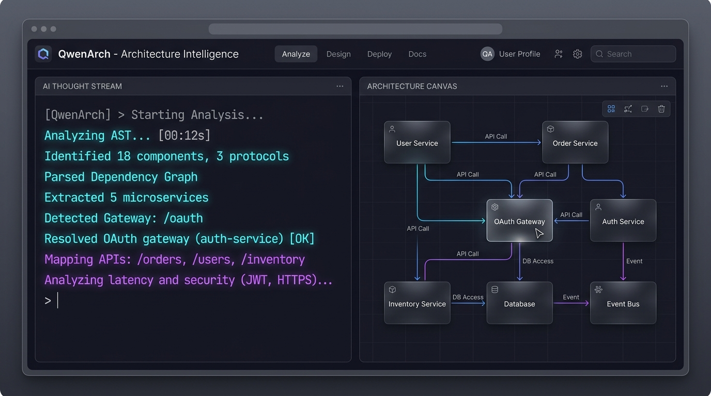
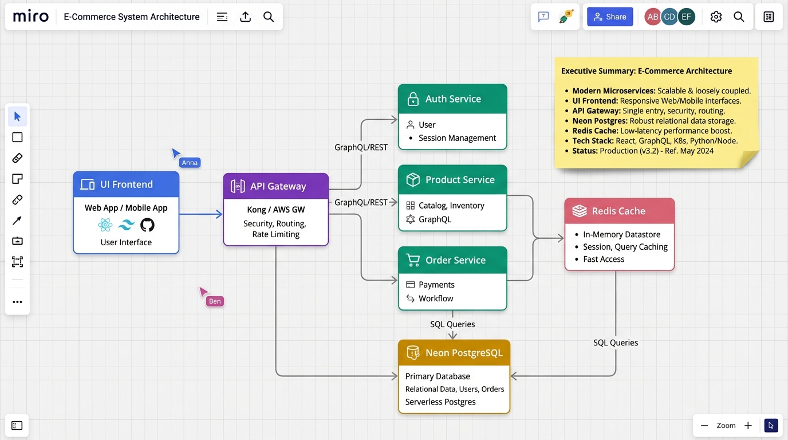

Turn Invisible Code into Living Architecture
Autonomous codebase reasoning powered by Qwen 3.8-27B mapped into an interactive, multi-perspective collaborative whiteboard synced live to Miro.

Code Generation is Instant. System Understanding is Broken.
Modern developers generate thousands of lines in hours, creating massive visual blind spots across every skill tier.
Ship working MVPs with LLMs in hours, but have zero system topology. When bugs or database timeouts hit, they cannot trace the state flow or isolate services.
Opening real-world open-source repositories feels like drowning in boilerplate folders. They need conceptual, pedagogical diagrams to understand how frameworks connect.
Manual diagrams in Draw.io or Lucidchart decay the instant code is merged. Architecture documentation is almost universally stale, causing team friction during PR reviews.
The QwenArch Autonomous Architecture Pipeline
From raw source repository to an interactive collaborative whiteboard in under 10 seconds.
Parses project manifests (package.json, docker-compose.yml, requirements.txt), API routers, database models, and service boundaries into a concise semantic token context.
Qwen performs structural deduction: identifying microservice roles, database relationships, protocols (HTTP / gRPC / WSS), security boundaries, and architectural risks with structured JSON validation.
Renders locally with interactive zoom/pan controls and executes automated REST calls to construct cards, connectors, badges, and sticky notes on your target Miro team board.
Live Miro Canvas Synchronization
Transforms code understanding from a solo exercise into a multiplayer whiteboard session.

Built for Everyone Who Creates with Code
Tailoring architectural perspective to match each creator's mental model and workflow.
Get a crystal-clear high-level map that explains what every generated service does without getting lost in boilerplate syntax.
Learn how real-world systems connect by viewing pedagogical breakdowns of open-source projects with annotated technology tags.
Review architectural changes visually, audit security perimeters, and catch single points of failure before code reaches production.
Read executive architectural summaries and data pipelines to understand system capabilities and dependencies for sprint planning.
7 Specialized Perspectives & Custom Focus Directives
Switch viewpoints instantly to inspect your codebase at any level of granularity.
Instruct Qwen's attention to focus on specific architectural domains or concerns:
Beyond Static AST Parsers & Markdown Charts
Why QwenArch offers an unmatched collaborative advantage over traditional tools.
| Capability | Mermaid Sync / Code2Chart | CodeBoarding / Diagrammer | QwenArch (Ours) |
|---|---|---|---|
| Live Miro Whiteboard Sync | ✗ Static markdown only | ✗ Web-only silo | ✓ Live Interactive Miro Canvas |
| Reasoning Engine | Regex / Simple AST | Rule-based diffs | ✓ Qwen 3.8-27B Deep LLM Reasoning |
| Audience Adaptability | Devs only | PR Reviewers | ✓ Vibe Coders, Learners, Leads & Execs |
| Custom Focus Directives | ✗ Fixed output | ✗ Fixed output | ✓ 7 Perspectives + Custom Directives |
| Deployment Flexibility | Local CLI only | Proprietary SaaS | ✓ 1-Click Vercel Serverless + Local |
Production-Grade Serverless Architecture
Optimized for sub-second responses, real-time streaming, and global serverless deployment.
• React 18 + Vite SPA
• Minimalist Titanium Dark theme
• Interactive SVG / DOM graph canvas
• Server-Sent Events (SSE) stream parser
• Asynchronous SSE event streamer
• Vercel Python Serverless (api/index.py)
• AST manifest & router scanner
• Resilient JSON auto-repair engine
• ModelScope API (Qwen 3.8-27B)
• Local Ollama offline fallback
• Miro REST API v2 connector engine
• Multi-tier layout coordinate mapper
The 60-Second Demo Pitch
Hook "How many of you have built an entire project with AI in an afternoon, only to realize you can't visualize how all the generated pieces fit together?
Contrast Traditional tools spit out unreadable static AST spaghetti, while manual whiteboards take hours to draw and rot the moment a PR merges.
Reveal QwenArch solves this by pairing Qwen's deep code reasoning with Miro's infinite collaborative whiteboard. In one click, it ingests your repository, reasons through your architecture from 7 distinct perspectives, and paints an interactive, editable whiteboard on Miro with zero configuration.
Closing Whether you're a student learning open-source, a vibe coder building an MVP, or an engineering lead running a sprint review — QwenArch turns invisible code into clear, collaborative visual thinking."
Ready for Live Demo
Open source, extensible, and built for the next generation of AI-assisted developers.
qwenarch-vercel.zip (1-Click Serverless)
- • Bi-directional Canvas Sync: Drag shapes on Miro to scaffold backend API routes and schemas.
- • GitHub Action PR Bot: Automatically update Miro boards whenever code merges to main.
- • Live Telemetry Overlay: View real-time traffic and error rates directly on Miro nodes.
- • AI Voice Walkthrough: Interactive audio guided tour for junior developers and students.